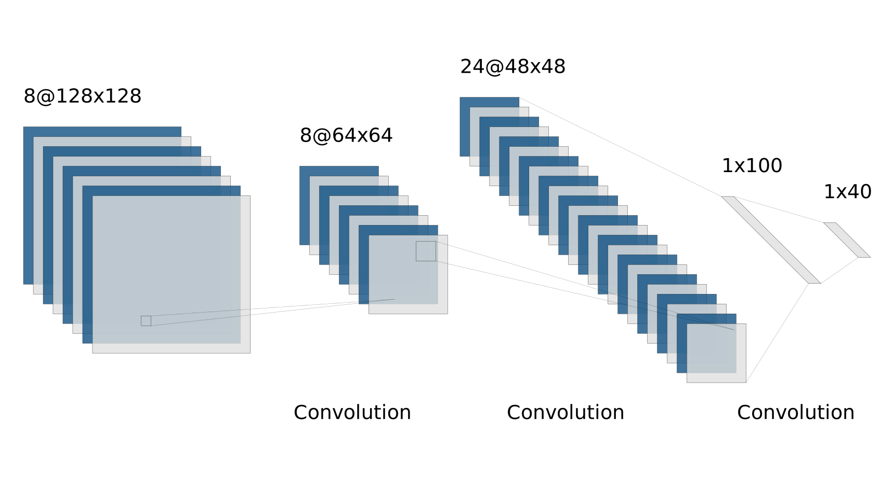
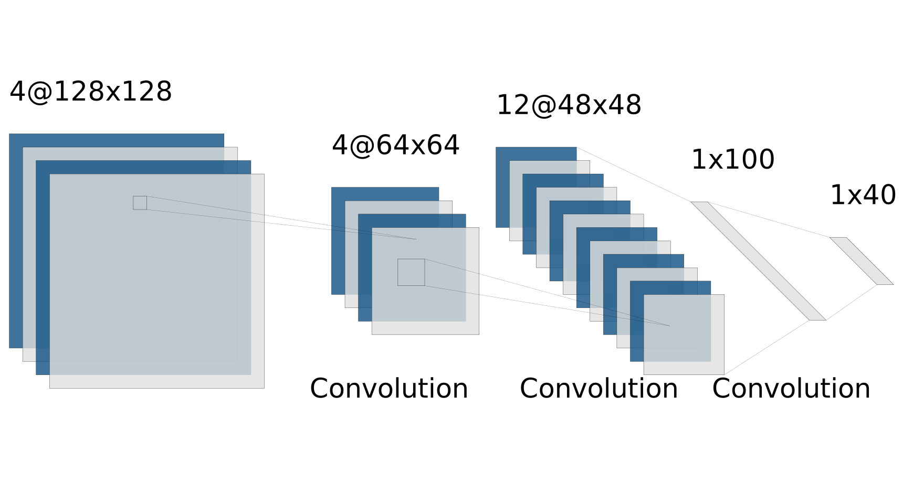

Deep neural networks have been the state-of-the-art in machine learning for quite a while now; however, it is apparent that they are over-parameterized. Therefore, *pruning* of neural network weights is a valuable endeavor for utilizing NNs in practice—it makes them many times more lightweight, leading to significant gains in both memory and computational efficiency. Many convolutional neural networks are have two distinct parts: a feature extractor, with many convolutional layers that are computationally intense, and a classification layer, with a few dense, fully-connected layers that are memory intense. In this final project, we focus on pruning filters, implementing several different methods of pruning and comparing their efficacies. (Methods to prune and compress fully-connected layers include weight-quantization and huffman coding[2]).